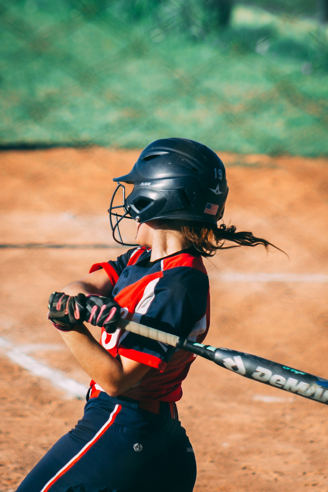

Mistakes That Can Happen in the Game
- Baserunning errors caused by a missed call from the coach or a poor read.
- Poor pitch selection at the plate.
- Rolling your hands after swinging can result in a weak grounder and increase your chance of being out.
